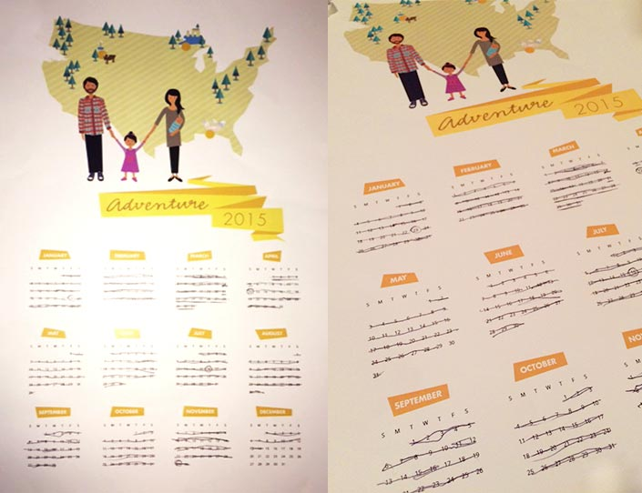

Happy New Year! I like to make a calendar for our family each year and doing the layout in illustrator can be rather tedious. So last year I decided to write some code to do it in SVG utilizing Snap.svg. Last year I did an illustration noting some of the vacations we had planned for the year.
Here's the script on codepen if you care to use it. It's easy enough to pull out the generated SVG from dev tools and bring into Illustrator.
See the Pen Calendar Generator by CJ Gammon (@cjgammon) on CodePen.